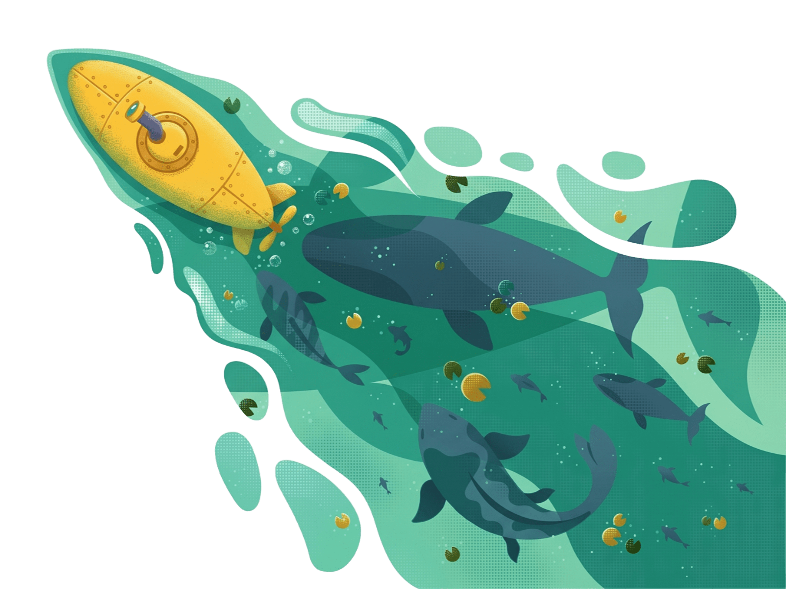

KORA
TRANSMISSÃO //
Aviso de manutenção preventiva no Setor 4. Fechem as comportas secundárias às 18h.
Expira em

Conecte-se à cidade submarina, descubra seus espaços e explore um novo mundo abaixo da superfície.
0-200 M // Zona Fótica
200-1000 M // Zona Crepuscular
1000-3000 M // Zona Batipelágica
“TODA MENSAGEM É UMA COMPORTA ABERTA ENTRE NÓS.”
TRANSMISSÃO //
Aviso de manutenção preventiva no Setor 4. Fechem as comportas secundárias às 18h.
Expira em
TRANSMISSÃO //
Achei cabos coaxiais intactos perto da carcaça do petroleiro. Quem precisar, apareça na oficina.
Expira em
TRANSMISSÃO //
Sessão de transmissão oral dos arquivos de Tlaloc hoje à noite na praça central do reator.
Expira em
TRANSMISSÃO //
Nova safra de algas com rendimento 15% superior de oxigênio. O ar vai ficar mais limpo.
Expira em
TRANSMISSÃO //
Canal de chamados aberto. Se sua cúpula estiver perdendo pressão, avise imediatamente aqui.
Expira em
Não há mensagens ativas no mural neste momento.
3000-4000 M // Zona Abissal
“VOCÊ CHEGOU AO FUNDO. AGORA RESPONDA.”
3400+ M // Fundo Abissal